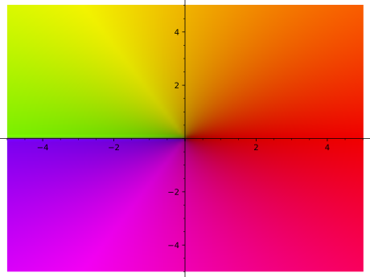
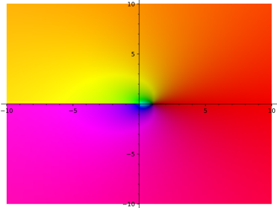
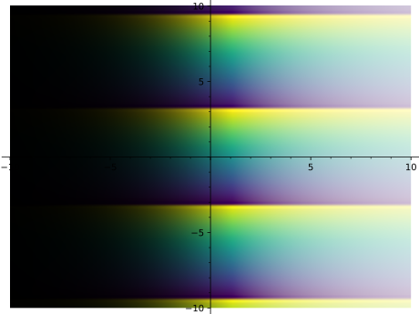
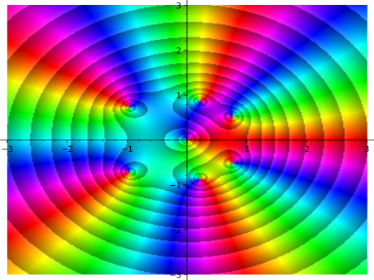

Return an rgb array from given array of \((r, g, b)\) and \((delta)\).
Each input \((r, g, b)\) is modified by delta to be lighter or darker
depending on the size of delta. Negative delta values darken the
color, while positive delta values lighten the pixel.
We assume that the delta values come from a function like
sage.plot.complex_plot.mag_to_lightness(), which maps magnitudes to
the range \([-1, +1]\).
INPUT:
rgb – a grid of length 3 tuples \((r, g, b)\), as an \(N \times M
\times 3\) numpy array.
delta – a grid of values as an \(N \times M\) numpy array; these
represent how much to change the lightness of each \((r, g, b)\). Values
should be in \([-1, 1]\).
dark_rate – a positive number (default: \(0.5\)); affects how
strongly visible the contours appear.
OUTPUT:
An \(N \times M \times 3\) floating point Numpy array X, where
X[i,j] is an (r, g, b) tuple.
Return an rgb array from given array of colors and lightness adjustments.
This smoothly adds lightness from black (when delta is \(-1\)) to white
(when delta is \(1\)).
Each input \((r, g, b)\) is modified by delta to be lighter or darker
depending on the size of delta. When delta is \(-1\), the output is
black. When delta is \(+1\), the output is white. Colors
piecewise-linearly vary from black to the initial \((r, g, b)\) to white.
We assume that the delta values come from a function like
sage.plot.complex_plot.mag_to_lightness(), which maps magnitudes to
the range \([-1, +1]\).
INPUT:
rgb – a grid of length 3 tuples \((r, g, b)\), as an
\(N \times M \times 3\) numpy array.
delta – a grid of values as an \(N \times M\) numpy array; these
represent how much to change the lightness of each \((r, g, b)\). Values
should be in \([-1, 1]\).
OUTPUT:
An \(N \times M \times 3\) floating point Numpy array X, where
X[i,j] is an (r, g, b) tuple.
complex_plot takes a complex function of one variable,
\(f(z)\) and plots output of the function over the specified
x_range and y_range as demonstrated below. The magnitude of
the output is indicated by the brightness and the argument is
represented by the hue.
By default, zero magnitude corresponds to black output, infinite
magnitude corresponds to white output. The options contoured,
tiled, and cmap affect the output.
f – a function of a single complex value \(x + iy\)
(xmin,xmax) – 2-tuple, the range of x values
(ymin,ymax) – 2-tuple, the range of y values
cmap – None, or the string name of a matplotlib colormap, or an
instance of a matplotlib Colormap, or the special string 'matplotlib'
(default: None); If None, then hues are chosen from a standard
color wheel, cycling from red to yellow to blue. If matplotlib, then
hues are chosen from a preset matplotlib colormap.
The following named parameter inputs can be used to add contours and adjust
their distribution:
contoured – boolean (default: False); causes the magnitude
to be indicated by logarithmically spaced ‘contours’. The
magnitude along one contour is either twice or half the magnitude
along adjacent contours.
dark_rate – a positive number (default: \(0.5\)); affects how quickly
magnitudes affect how light/dark the image is. When there are contours,
this affects how visible each contour is. Large values (near \(1.0\)) have
very strong, immediate effects, while small values (near \(0.0\)) have
gradual effects.
tiled – boolean (default: False); causes the magnitude to
be indicated by logarithmically spaced ‘contours’ as in
contoured, and in addition for there to be \(10\) evenly
spaced phase contours.
nphases – a positive integer (default: \(10\)); when tiled=True,
this is the number of divisions the phase is divided into.
contour_type – either 'logarithmic', or 'linear' (default:
'logarithmic'); causes added contours to be of given type when
contoured=True.
contour_base – a positive integer; when contour_type is
'logarithmic', this sets logarithmic contours at multiples of
contour_base apart. When contour_type is 'linear', this sets
contours at distances of contour_base apart. If None, then a
default is chosen depending on contour_type.
The following inputs may also be passed in as named parameters:
plot_points – integer (default: 100); number of points to
plot in each direction of the grid
Any additional parameters will be passed to show(), as long as they’re
valid.
Note
Matplotlib colormaps can be chosen or customized to cater to different
types of vision. The colormaps ‘cividis’ and ‘viridis’ in matplotlib
are designed to be perceptually uniform to a broader audience. The
colormap ‘turbo’ is similar to the default but with more even contrast.
See [NAR2018] for more information about colormap choice for
scientific visualization.
EXAMPLES:
Here we plot a couple of simple functions:
sage: complex_plot(sqrt(x),(-5,5),(-5,5))Graphics object consisting of 1 graphics primitive

sage: complex_plot(sin(x),(-5,5),(-5,5))Graphics object consisting of 1 graphics primitive
sage: complex_plot(log(x),(-10,10),(-10,10))Graphics object consisting of 1 graphics primitive

sage: complex_plot(exp(x),(-10,10),(-10,10))Graphics object consisting of 1 graphics primitive
A plot with a different choice of colormap:
sage: complex_plot(exp(x),(-10,10),(-10,10),cmap='viridis')Graphics object consisting of 1 graphics primitive

A function with some nice zeros and a pole:
sage: f(z)=z^5+z-1+1/zsage: complex_plot(f,(-3,3),(-3,3))Graphics object consisting of 1 graphics primitive
The same function as above, but with contours. Contours render poorly with
few plot points, so we use 300 here:
sage: f(z)=z^5+z-1+1/zsage: complex_plot(f,(-3,3),(-3,3),plot_points=300,contoured=True)Graphics object consisting of 1 graphics primitive

The same function as above, but tiled and with the plasma colormap:
sage: f(z)=z^5+z-1+1/zsage: complex_plot(f,(-3,3),(-3,3),....: plot_points=300,tiled=True,cmap='plasma')Graphics object consisting of 1 graphics primitive
When using tiled=True, the number of phase subdivisions can be
controlled by adjusting nphases. We make the same plot with fewer
tilings:
sage: f(z)=z^5+z-1+1/zsage: complex_plot(f,(-3,3),(-3,3),plot_points=300,....: tiled=True,nphases=5,cmap='plasma')Graphics object consisting of 1 graphics primitive
It is also possible to use linear contours. We plot the same function
above on an inset, setting contours to appear \(1\) apart:
sage: f(z)=z^5+z-1+1/zsage: complex_plot(f,(0,1),(0,1),plot_points=300,....: contoured=True,contour_type='linear',contour_base=1)Graphics object consisting of 1 graphics primitive
Note that tightly spaced contours can lead to Moiré patterns and aliasing
problems. For example:
sage: f(z)=z^5+z-1+1/zsage: complex_plot(f,(-3,3),(-3,3),plot_points=300,....: contoured=True,contour_type='linear',contour_base=1)Graphics object consisting of 1 graphics primitive
When choosing colormaps, cyclic colormaps such as twilight or hsv might
be considered more appropriate for showing changes in phase without sharp
color contrasts:
sage: f(z)=z^5+z-1+1/zsage: complex_plot(f,(-3,3),(-3,3),plot_points=300,cmap='twilight')Graphics object consisting of 1 graphics primitive
Passing matplotlib as the colormap gives a special colormap that is
similar to the default:
sage: f(z)=z^5+z-1+1/zsage: complex_plot(f,(-3,3),(-3,3),....: plot_points=300,contoured=True,cmap='matplotlib')Graphics object consisting of 1 graphics primitive
Here is the identity, useful for seeing what values map to what colors:
sage: complex_plot(lambdaz:z,(-3,3),(-3,3))Graphics object consisting of 1 graphics primitive
The Riemann Zeta function:
sage: complex_plot(zeta,(-30,30),(-30,30))Graphics object consisting of 1 graphics primitive
For advanced usage, it is possible to tweak many parameters. Increasing
dark_rate will make regions become darker/lighter faster when there are no
contours:
sage: complex_plot(zeta,(-30,30),(-30,30),dark_rate=1.0)Graphics object consisting of 1 graphics primitive
Decreasing dark_rate has the opposite effect. When there are contours,
adjust dark_rate affects how visible contours are. Compare:
sage: complex_plot(zeta,(-1,9),(10,20),plot_points=200,# long time....: contoured=True,cmap='twilight',dark_rate=0.2)Graphics object consisting of 1 graphics primitive
and:
sage: complex_plot(zeta,(-1,9),(10,20),plot_points=200,# long time....: contoured=True,cmap='twilight',dark_rate=0.75)Graphics object consisting of 1 graphics primitive
In practice, different values of dark_rate will work well with
different colormaps.
Extra options will get passed on to show(), as long as they are valid:
sage: complex_plot(lambdaz:z,(-3,3),(-3,3),figsize=[1,1])Graphics object consisting of 1 graphics primitive
sage: complex_plot(lambdaz:z,(-3,3),(-3,3)).show(figsize=[1,1])# These are equivalent
REFERENCES:
Plotting complex functions with colormaps follows the strategy
from [LD2021] and incorporates contour techniques described
in [WegSem2010].
Convert a grid of complex numbers to a grid of rgb values using colors
taken from given colormap.
INPUT:
z_values – A grid of complex numbers, as a list of lists
cmap – the string name of a matplotlib colormap, or an instance
of a matplotlib Colormap (default: 'turbo').
contoured – boolean (default: False); causes magnitude to be
indicated through contour-like adjustments to lightness.
tiled – boolean (default: False); causes magnitude and argument to
be indicated through contour-like adjustments to lightness.
nphases – a positive integer (default: \(10\)); when tiled=True,
this is the number of divisions the phase is divided into.
contour_type – either 'logarithmic', or 'linear' (default:
'logarithmic'); causes added contours to be of given type when
contoured=True.
contour_base – a positive integer; when contour_type is
'logarithmic', this sets logarithmic contours at multiples of
contour_base apart. When contour_type is 'linear', this sets
contours at distances of contour_base apart. If None, then a
default is chosen depending on contour_type.
dark_rate – a positive number (default: \(0.5\)); affects how quickly
magnitudes affect how light/dark the image is. When there are contours,
this affects how visible each contour is. Large values (near \(1.0\)) have
very strong, immediate effects, while small values (near \(0.0\)) have
gradual effects.
OUTPUT:
An \(N \times M \times 3\) floating point Numpy array X, where
X[i,j] is an (r, g, b) tuple.
We see that changing dark_rate affects how visible contours are. In this
example, we set contour_base=5 and note that the points \(0\) and \(1 + i\)
are far away from contours, but \(2.9 + 4i\) is near (and just below) a
contour. Raising dark_rate should have strong effects on the last
coloration and weaker effects on the others:
Convert a grid of complex numbers to a grid of rgb values using a default
choice of colors.
INPUT:
z_values – A grid of complex numbers, as a list of lists
contoured – boolean (default: False); causes magnitude to be
indicated through contour-like adjustments to lightness.
tiled – boolean (default: False); causes magnitude and argument to
be indicated through contour-like adjustments to lightness.
nphases – a positive integer (default: \(10\)); when tiled=True,
this is the number of divisions the phase is divided into.
contour_type – either 'logarithmic', or 'linear' (default:
'logarithmic'); causes added contours to be of given type when
contoured=True.
contour_base – a positive integer; when contour_type is
'logarithmic', this sets logarithmic contours at multiples of
contour_base apart. When contour_type is 'linear', this sets
contours at distances of contour_base apart. If None, then a
default is chosen depending on contour_type.
dark_rate – a positive number (default: \(0.5\)); affects how quickly
magnitudes affect how light/dark the image is. When there are contours,
this affects how visible each contour is. Large values (near \(1.0\)) have
very strong, immediate effects, while small values (near \(0.0\)) have
gradual effects.
OUTPUT:
An \(N \times M \times 3\) floating point Numpy array X, where
X[i,j] is an (r,g,b) tuple.
Convert array of hls values (each in the range \([0, 1]\))
to a numpy array of rgb values (each in the range \([0, 1]\))
INPUT:
hls – an \(N \times 3\) array of floats in the range \([0, 1]\); the hls
values at each point. (Note that the input can actually be of any
dimension, such as \(N \times M \times 3\), as long as the last dimension
has length \(3\)).
OUTPUT:
An \(N \times 3\) Numpy array of floats in the range \([0, 1]\), with
the same dimensions as the input array.
Convert array of rgb values (each in the range \([0, 1]\))
to a numpy array of hls values (each in the range \([0, 1]\))
INPUT:
rgb – an \(N \times 3\) array of floats with values
in the range \([0, 1]\); the rgb values at each point. (Note that the input
can actually be of any dimension, such as \(N \times M \times 3\), as long
as the last dimension has length \(3\)).
OUTPUT:
An \(N \times 3\) Numpy array of floats in the range \([0, 1]\), with
the same dimensions as the input array.